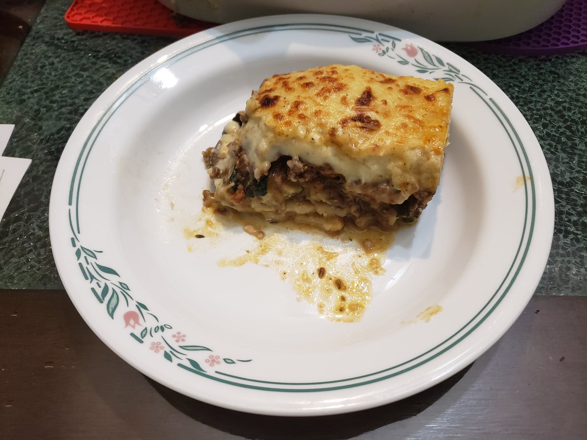

Moussaka

Ingredients:
Vegetable Layer:
- 3 Medium potatoes, peeled and mediumly thickly sliced
- 2 Eggplants, mediumly thickly sliced
- 2 Zucchinis, mediumly thickly sliced
- Vegetable oil for deep frying
- Salt, to taste
- Black pepper, to taste
Meat Layer:
- 1 lb Ground beef, 93% lean
- 2 tbsp Olive oil
- 1 Onion, diced
- 2 cloves Garlic, minced
- 1 tbsp Fresh thyme
- 1 tsp Salt, or to taste
- 1/2 tsp Black pepper, or to taste
- 1 tsp Sugar
- 1 tsp Cinnamon
- 1/2 tsp Ground cloves
- 1 tbsp Tomato paste
- 1 14.5 oz can Diced tomatoes
- 1/2 bunch Parlsey, chopped
- 1/2 bunch Basil, chopped
Béchamel Sauce:
- 1/2 cup Unsalted butter
- 1/2 cup All-purpose flour
- 3 cups Whole milk
- 1/2 tsp Nutmeg
- 1/2 tsp Salt, or to taste
- 1/4 tsp Black pepper, or to taste
- 1/2 cup Grated parmesan Cheese
- 3 Egg yolks
Other Ingredients:
- 1/4 cup Grated parmesan cheese
- Optional: Olive oil, to taste
Instructions:
- Heat the vegetable oil over medium heat and deep fry the potatoes for 5-10 minutes. Remove with a slotted spoon and transfer to a baking pan lined with paper towels. Allow to drain from excess oil. Then, repeat the same process with the eggplants, and then with the zucchinis. Pat the vegetables dry to ensure there is no excess oil.
- In a large pan, heat the olive oil over medium-high heat and add the onion and sauté for about 1 minute. Then add in the garlic, thyme, salt, pepper, and sugar. Sauté for 1-2 minutes, or until the onions are caramelized.
- Then mix in the cinnamon and clove for 20 seconds or until fragrant. Then add in the ground beef and sauté until completely brown.
- Add in the tomato paste and sauté for 1 minute. Then, mix in the diced tomatoes, lower the heat and let simmer for 5-10 minutes until the sauce is very thick.
- Remove from heat and mix in the parsley and basil. Adjust salt and pepper to taste.
- For the béchamel sauce, place a pot over medium heat and melt the butter. Add the flour and whisk until it soaks up all of the butter.
- Add the milk in small batches while continuously whisking so that no lumps form.
- As soon as the béchamel sauce thickens and bubbles start to form on the surface, remove from heat.
- Add the nutmeg, salt, and pepper. Taste and adjust salt and pepper to preference. Then, add the parmesan and egg yolks. Whisk thoroughly.
- Preheat the oven to 350 degrees Fahrenheit.
- In a 9x13" baking pan, spread a layer of potatoes, cover with a layer of eggplants and top with a layer of zucchini. Season with salt and pepper in between the layers.
- Add 2-3 tablespoons of béchamel sauce to the ground meat mixture and mix. Spread the ground meat into an even layer over the vegetables.
- Cover with a final layer of the béchamel sauce, spreading it evenly. Sprinkle the moussaka with the 1/4 cup of grated parmesan.
- Bake for 35-40 minutes. If the top layer is not darkened by then, place into the broiler for 1-2 minutes.
- Remove from the oven/broiler and let cool for about 30 minutes to let it absorb any juices and make slicing easier.
- Slice and optionally serve with a garnish of olive oil.